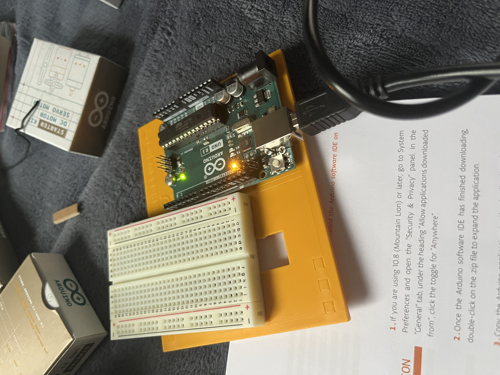

This is the first blog post for my 470 class. I didn't get the Arduino starter kit until yesterday, so I'm starting this a little late. I also just finished creating the website to put this on. So I hope in the future, that these won't take as long, and I'll be able to get them done earlier in the week. Anyway, let's get started.
Open for the first time
So, first I opened up the kit to make sure I had all the parts, because it came in the mail already opened. Luckily I did! Then I flipped to the page with the instructions to start the setup.
Starting the setup
I popped out all the parts like the book said. It took a while to pop them out using my hands, but we got there in the end. Then I screwed the Arduino Uno onto the base as instructed. I had to use my hands, unlike what it shows in the example, because I had no screw driver. I decided not to attach the breadboard just yet because I couldn't figure out which way it went.
Once I downloaded the Arduino IDE, I plugged it in. It immediately lit up and was already blinking which I supposed was a good thing. It seemed to be all set up!
The blinking light
I followed the directions and opened up the beginner blink example. I pressed the button and it did this little blinking pattern, which showed that it was working.

I attached the breadboard making sure it was facing the right way, although it is a little crooked. Then as I read along, it told me to change the delay time to make it blink faster, just to prove that it was completely connected. I did that, and this is the final result. Blinking fast, like it should.


Conclusion
I did feel I had to go a little quickly through this one because it took me a while to get the kit and set up the website. I'm hoping that from here on out it wont take me as long, due to the stuff already being set up, so I can actually focus more on the assignment. It was a lot of fun though, and it makes me excited for what is to come in the future.